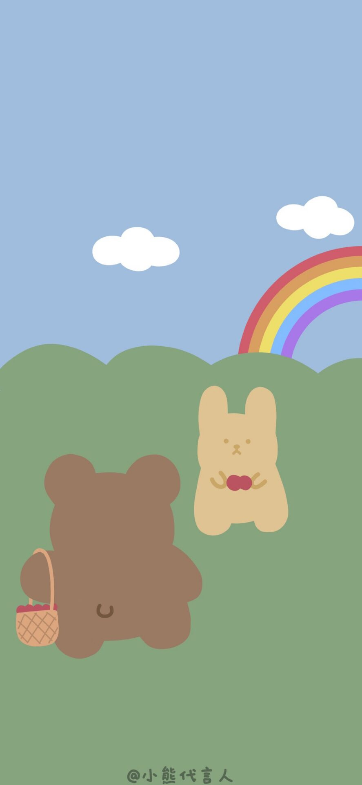

<!DOCTYPE html>
<html>

	<head>
		<meta charset="UTF-8">
		<title></title>
		<style type="text/css">
			html {
				height: 100rem;
				width:100rem;
			}
			body {
				
				margin-top: 50%;
				width: 85%;
				margin: 60% auto 0;
				font-size: 70px;
				/*color:ghostwhite;*/
				background: url(https://artghosts.github.io/obj.jpg) no-repeat 0 0 /cover;
				background-attachment:fixed;
			}
		</style>
	</head>

	<body>
		<!---->
	</body>
	<script type="text/javascript">
		//计算过去的某个时间 已经过去多少天 
		function countDown() {
			var now = new Date(); //获取当前时间  
			console.log(now);
			var formerly = new Date(2021, 10, 12, 17, 0, 0); //自定义时间  
			var stampFormerly = formerly.getTime(); //自定义的时间到1970年的时间戳  
			var stampNow = now.getTime(); //当前时间到1970年的时间戳  
			var res = (stampNow - stampFormerly) / 1000;
			//秒 差值  
			//天  
			var d = Math.floor(res / (60 * 60 * 24));
			//时  
			var h = Math.floor(res % (60 * 60 * 24) / (60 * 60));
			//分  
			var m = Math.floor(res % (60 * 60 * 24) % (60 * 60) / 60);
			//秒  
			var s = Math.floor(res % (60 * 60 * 24) % (60 * 60) % 60);
			console.log(d,h,m,s)
			
			document.body.innerHTML = "卢玉浩答应我" + d + "天" + h + "时" + m + "分" + s + "秒❤<br><br>&#160;&#160;&#160&#160;&#160;&#160&#160;&#160;&#160&#160;&#160;&#160&#160;&#160;&#160&#160;&#160;&#160&#160;&#160;&#160&#160;&#160;&#160&#160;&#160;&#160&#160;❤珍惜一分一秒 ";
		}
		setInterval(countDown, 1000);
	</script>

</html>